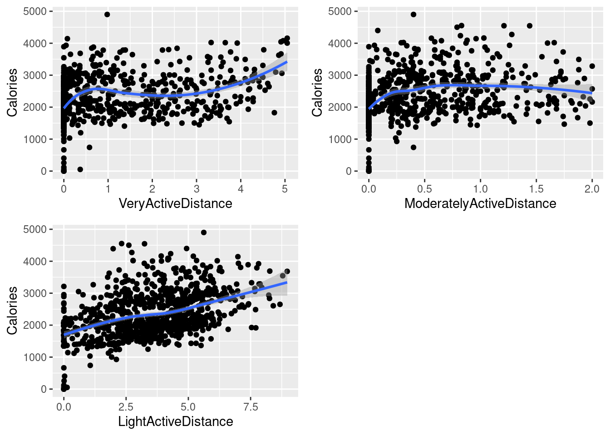
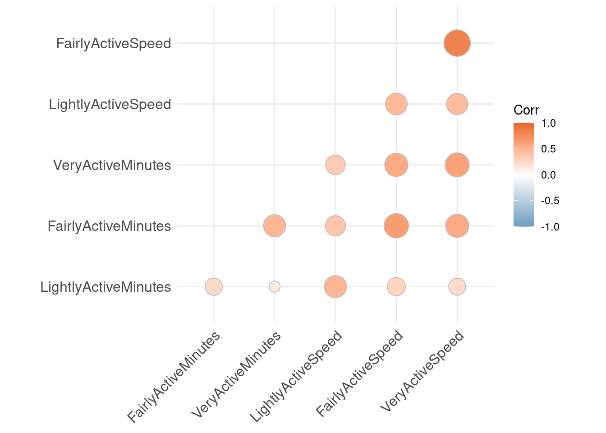
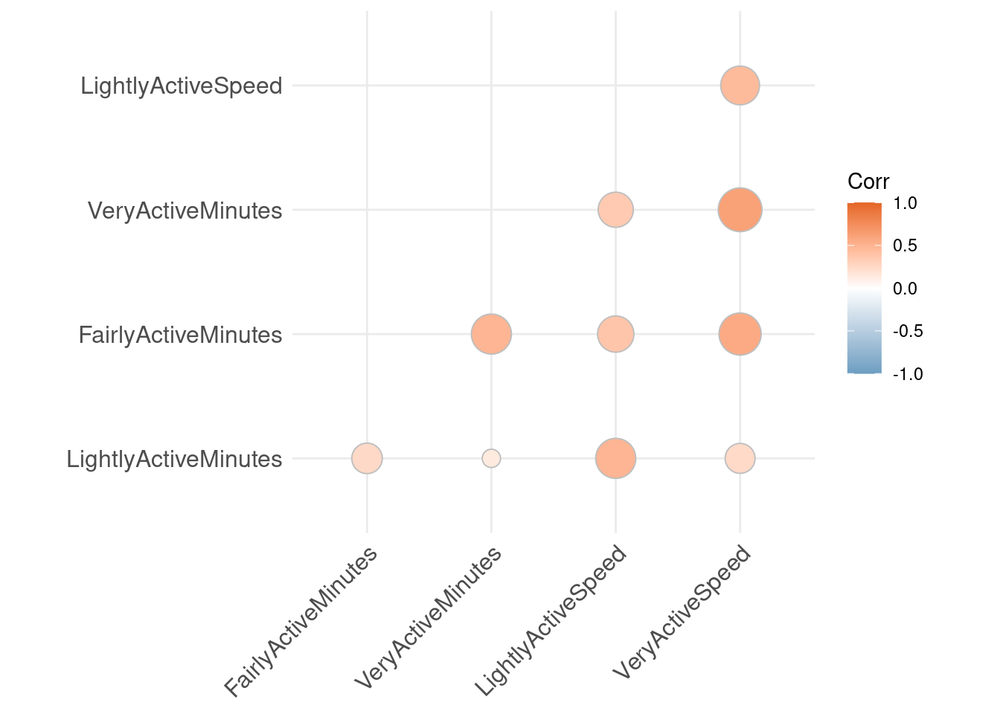
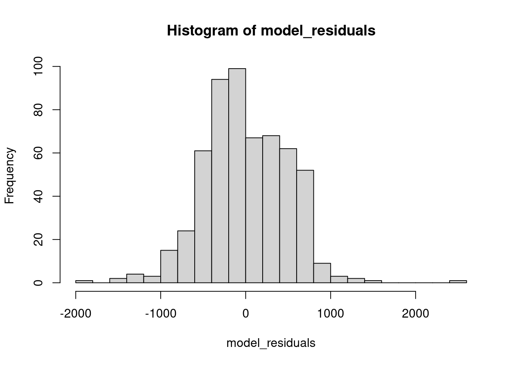

- What to expect in this blog
- Exploratory Analysis
- Data cleaning
- Data Analysis with Visualizations
- Multivariate Regression Analysis
What to expect in this blog
This is going to be a slightly technical blog, just because it’ll focus on the techniques I used to analyze the dataset and extract relationships and insights. There won’t be any complex math, though, only simple theory explanation, numbers produced by a technique, what the technique does, what the numbers mean, and what’s the code for it. The code is usually one-liners since R is just that cool (? jk. Or am I? :p)
I thought it would be useful to just boom boom boom, get a ton of helpful techniques out there, for reference purposes. This could get a bit long.
So here we go.
Complete R Notebook for reference
Exploratory Analysis
Not a lot to see here. Of course, first of all load tidyverse.
A list of common functions and short descriptions:
head(): to see the complete first 5 rows of the dataframe, no matter how many columns there are.colnames(): as the function name suggests, return a list of column names in the dataframe.n_distinct(column): return the number of distinct values for a column. Doesn’t return what they are and their counts.nrow():return the number of rows a dataframe has.
Data cleaning
I removed outliers since they skewed the distribution and would distablize analysis even if they are real values.
R doesn’t seem to have a function to do this, so I wrote my own:
filter_outlier <- function(data, column){
quartiles <- quantile(column, probs=c(.25, .75), na.rm = FALSE)
IQR <- IQR(column)
Lower <- quartiles[1] - 1.5*IQR
Upper <- quartiles[2] + 1.5*IQR
data_no_outlier <- subset(data, column < Upper)
return(data_no_outlier)
}
The function returns a dataframe without the outliers, but you can also return the outliers by setting column > Upper in the second to last line. You might want to rename data_no_outlier to something like outliers.
As you see, the function calculate $Q_1$ and $Q_3$ of the data. The lower bound is obtained by minus $Q_1$ with $1.5 \times IQR$, and the upper bounds add $1.5 \times IQR$ to $Q_3$. The reason behind this is that calculated this way, the upper and lower bound is approximately $\displaystyle \pm 2.7 \times std$, which is close to 3 standard deiviation from the center mean.
Data Analysis with Visualizations
My next step is to analyze the relationship between distance with various intensities and calories burnt. I did this by using scatter plot on each of the intensities data.
One line of code looks like this:
p1 <- ggplot(data=very_active_distance, aes(x=VeryActiveDistance, y=Calories)) + geom_point() + geom_smooth()
Let’s break down this one-liner.
ggplot()initialize a ggplot object.- According to the official doc, “it can be used to declare the input data frame for a graphic and to specify the set of plot aesthetics.”
- The first half of the sentence is clear enough – it specifies which dataframe to use for this graph.
- The second half of the sentence requires us know what the heck “aesthetics” mean here.
- It means “something you can see”, so here we can specify
x = ..., y = ..., color = ..., and so on. - Each aesthetic will be initialized with a name value pair where the value is a layer variable, which means you directly refer to the column name instead of referring to the dataframe
geom_point()specifies that this would be a scatter plotgeom_smooth()will add the correlation line over the scatter plot, with a grey area around the line to indicate the data point variance.
Before I show you the final plot, bare with me to see how you can create subplots and combine them.
First we install and load a package called “gridExtra”.
install.packages("gridExtra")
library("gridExtra") # double quote is not necessary here
Then we create two other plots using the same code as before, only replace the variables, and call them p2 and p3.
p2 <- ggplot(data=moderately_active_distance, aes(x=ModeratelyActiveDistance, y=Calories)) + geom_point() + geom_smooth()
p3 <- ggplot(data=light_active_distance, aes(x=LightActiveDistance, y=Calories)) + geom_point() + geom_smooth()
using the grid.arrange() function, we can create a subplot, specifying that we want 2 rows of subplots:
grid.arrange(p1, p2, p3, nrow = 2)
We get the following subplot:

We can see that VeryActiveDistance and LightActiveDistance have generally positive correlation with calories, while ModeratelyActiveDistance has none or slightly negative correlation with calories.
Applying the same functions to minutes with various intensities, we get the following graphs:
It looks like VeryActiveMinutes have a positive correlation with calories burnt. The other two has insignificant correlations.
I also plotted Total Steps and Total Distance’s correlation with calories burnt, and the result is not surprising – they clearly correlates positively.
Multivariate Regression Analysis
Theory (don’t be scared!)
This is a great yet basic statistical technique to actually quantify the relationships between independent(“predictors”, “explanatory”) variables and dependent(“target”) variable.
A simpler version of this is univariate regression analysis. This means it’s only considering one independent variable.
If you remember from high school, a degree 1 polynomial with one variable is the simpliest form of polynomial. In math language, it can be easily expressed as follow:
\[y = ax + b\]where y is the target variable and x is the independent variable. What it’s saying is that a change in 1 unit of the independent variable $x$ will result in a change of $a$ times a unit of the target variable $y$, with a bias term of $b$.
Wait, why do we need the bias term?
It offsets the model. With only the parameter a, we are assuming that, for example, if the independent variable is 0, then the target variable is also 0. That doesn’t make sense. I can still burn calories if I lay in bed all day.
This is why we need the bias term $b$, which offsets the straight line of $y = ax$. This is effectively saying, no matter what the independent variable is, there are something constant other than $x$ that contribute to the value of $y$.
A univariate linear regression model effectively models the effects of one independent variable. In reality, we would want to model multiple variables. So we use multivariate regression.
The math formula of this is similar to the univariate version, only we are just adding more variables to the equation:
\[y = a_1x_1 + a_2x_2 + ... + a_nx_n + b\]where n is the number of variables you want to model, and each term $a_ix_i$ is the $i$th variable’s contribution to the target variable. We are summing all of the contributions and the bias term together to model the target variable.
This model is effectively telling us: if you only varies $x_i$, where $x_i$ is the $i$th independent variable, and keep every other variables the same, then the target variable $y$ will change $a_i$ times one unit of the target variable, offset by the bias term $b$.
It’s just a level up of the univariate version! But more granular.
And you can also calculate scores based on your model to see how well your model “models” the variance in your target variable($R^2$), and also if your model gives you significant signals instead of just random noise($p$-value).
Now we can apply what we know about regression analysis to the tracker data.
Actual Codes: Prepare for analysis
R, as great as it is as a statistical analysis language, of course are prepared for this.
First, we load the dataset and convert distances to speeds. $Distance = Time \times Speed$, so if I use distances, it will correlates with minutes. Because we assume independence between variables, we need to remove the dependence.
To do so, we use the with() function:
daily_activity <- read.csv("/kaggle/input/fitbit/Fitabase Data 4.12.16-5.12.16/dailyActivity_merged.csv")
daily_activity$LightlyActiveSpeed <- with(daily_activity, LightActiveDistance/((LightlyActiveMinutes + 0.0001)/60))
daily_activity$FairlyActiveSpeed <- with(daily_activity, ModeratelyActiveDistance/((FairlyActiveMinutes + 0.0001)/60))
daily_activity$VeryActiveSpeed <- with(daily_activity, VeryActiveDistance/((VeryActiveMinutes + 0.0001)/60))
If you are detailed enough to observe and question why I added 0.0001 to the minutes variables – that’s in case the variable is 0 in that row, and avoid division by zero. Since an addition of 0.0001 doesn’t really offset the actual value too much, it doesn’t matter if we apply that addition to non-zero values.
Before everything, we want to quantatively check that the independent variables doesn’t correlate with each other. The fancy jargon for this is “collinearity”.
We can do so by using the cor() function and visualize using the ggcorplot package.
First we remove the outliers and get a subset of only the minutes and speed with various intensities. We call this dataframe daily_activity_intensities
Then we load the library and calculate the correlation matrix:
install.packages("ggcorrplot", repos = "http://cran.us.r-project.org")
library("ggcorrplot")
corr_mat <- as.dist(round(cor(daily_activity_intensities, method="pearson"), 2))
corr_mat
The round() function round the result to up to 2 decimal points, and the as.dist() function shows only the lower half of the matrix.
And we get this result:
## LightlyActiveMinutes FairlyActiveMinutes VeryActiveMinutes LightlyActiveSpeed FairlyActiveSpeed
## FairlyActiveMinutes 0.25
## VeryActiveMinutes 0.14 0.49
## LightlyActiveSpeed 0.49 0.38 0.35
## FairlyActiveSpeed 0.28 0.65 0.56 0.47
## VeryActiveSpeed 0.24 0.56 0.62 0.45 0.82
It seems that FairlyActiveSpeed and VeryActiveSpeed correlates with each other(0.82). Rule of thumb is, if the number is larger than 0.8, it’s bad news.
It’s probably ok to just remove one column. I removed FairlyActiveSpeed for my first analysis because it seems from previous viz analysis that VeryActiveSpeed would have more influence.
We can visualize the result like so:
corr_mat_full <- round(cor(daily_activity_intensities, method="pearson"), 2)
ggcorrplot(corr_mat_full, method="circle", type = "lower", colors = c("#6D9EC1", "white", "#E46726"))

The method indicates what shape or style you want the plot to have. type = "lower" tells the graph to only show the lower half. colors tells the graph what colors correlates to values from 1, 0 to 1. The color should be adjusted for people who needs accessibility.
After removing the FairlyActiveSpeed column, we get this graph, which looks good to me.

Actual Codes: Fitting the model
First, I got all columns I need:
daily_activity_intensities <- subset(daily_activity_no_outlier,
select=c("LightlyActiveMinutes",
"FairlyActiveMinutes",
"VeryActiveMinutes",
"LightlyActiveSpeed",
"FairlyActiveSpeed",
"VeryActiveSpeed",
"Calories"))
Here, subset() takes a dataframe and only returns the composition of columns specifies in select.
We split the dataset into train and test set to test the model later. This is not entirely necessary since you can still get almost all of scores if you just train the model on the complete dataset, except prediction and accuracy of $y$.
Here, I’m doing this to compare the scores returned by the entire model and the scores returned by comparing the testing result to $y$
set.seed(1)
#use 70% of dataset as training set and 30% as test set
sample <- sample(c(TRUE, FALSE), nrow(daily_activity_intensities), replace=TRUE, prob=c(0.7, 0.3))
train <- daily_activity_intensities[sample, ]
test <- daily_activity_intensities[!sample, ]
Here, we set.seed() so that the randomization is always the same. Then we sample() to get a list of length of the dataframe, where the entry is true if the entry in the original dataframe will be selected, and false if not. The train to test probability is set to (0.7, 0.3).
Then we get all entries in daily_activity_intensities corresponds to the true-valued entries in sample by using the syntax train <- daily_activity_intensities[sample, ], as the train set; and get the test set by using the compliment of sample.
To train the regression model, we just use the function lm(). It stands for linear regression.
calorie_model = lm(formula = Calories ~ LightlyActiveMinutes + FairlyActiveMinutes +
VeryActiveMinutes + LightlyActiveSpeed + VeryActiveSpeed, data =
train)
Here, you can read the formula by “$y$ approximated by(dedicated by ~) $x_1$, $x_2$. $x_3$, and so on.” The dataframe for the model is specified using data=....
Actual Codes: Analyzing the model
First we confirm that the residual distribution is the normal distribution. Residuals are the differences between predictions and actual target values.
# Get the model residuals
model_residuals = calorie_model$residuals
# Plot the result
hist(model_residuals, breaks=25)
The hist() function takes a vector and display its distribution using a histogram. The breaks variable specifies how many bins you want for your histogram graph.
Here, we are checking the graph to make sure the residual is normally distributed, which is one of the assumption of using the regression analysis.
The graph looks like this:

It’s indeed normally distributed.
Next, we apply ANOVA test to the model. We can do so by simply using anova(), like so:
anova(calorie_model)
And we get the result:
## Analysis of Variance Table
##
## Response: Calories
## Df Sum Sq Mean Sq F value Pr(>F)
## LightlyActiveMinutes 1 21524936 21524936 89.5413 < 2.2e-16 ***
## FairlyActiveMinutes 1 17521559 17521559 72.8877 < 2.2e-16 ***
## VeryActiveMinutes 1 12888733 12888733 53.6157 8.493e-13 ***
## LightlyActiveSpeed 1 17220963 17220963 71.6373 2.255e-16 ***
## VeryActiveSpeed 1 109873 109873 0.4571 0.4993
## Residuals 562 135099838 240391
## ---
## Signif. codes: 0 '***' 0.001 '**' 0.01 '*' 0.05 '.' 0.1 ' ' 1
Interpreting the test result
The important parts here are the $F$-value and $Pr(>F)$. The $F$-value quantifies how much better the addition of that variable is than a model with no independent variables. The higher the $F$-value is, the more the independent variable effectively improves the model.
Before we look at $F$-value, though, we should look at its corresponding $p$-value, which is listed in the $Pr(>F)$ column. If this value is significantly small (< 0.05), then we can say that we reject the null hypothesis that the $F$-value is not statistically significant, and conclude that the variable’s contribution is actually meaningful.
Based on these ways of interpretations, we can see that all variables except VeryActiveSpeed are statistically significant in meaningfully modeling the target variable.
To get more scores, we use summarize(model) to check more stats about the model:
summary(calorie_model)
The following result is printed:
## Call:
## lm(formula = Calories ~ LightlyActiveMinutes + FairlyActiveMinutes +
## VeryActiveMinutes + LightlyActiveSpeed + VeryActiveSpeed,
## data = train)
##
## Residuals:
## Min 1Q Median 3Q Max
## -1844.26 -323.74 -35.63 380.77 2513.32
##
## Coefficients:
## Estimate Std. Error t value Pr(>|t|)
## (Intercept) 1444.4090 54.2493 26.625 < 2e-16 ***
## LightlyActiveMinutes 0.6478 0.2113 3.066 0.00227 **
## FairlyActiveMinutes 5.5389 2.1005 2.637 0.00860 **
## VeryActiveMinutes 6.9566 1.3277 5.240 2.28e-07 ***
## LightlyActiveSpeed 535.7986 63.4172 8.449 2.53e-16 ***
## VeryActiveSpeed -8.3180 12.3037 -0.676 0.49928
## ---
## Signif. codes: 0 '***' 0.001 '**' 0.01 '*' 0.05 '.' 0.1 ' ' 1
##
## Residual standard error: 490.3 on 562 degrees of freedom
## Multiple R-squared: 0.3389, Adjusted R-squared: 0.3331
## F-statistic: 57.63 on 5 and 562 DF, p-value: < 2.2e-16
Here we conducted $t$-test. If the $t$-value is non-zero and statistically significant ($p$-value $= Pr(>|t|) < 0.05$), then it indicates the relative strength of correlation between the independent variable and the target variable.
Based on this result, again, every variable except VeryActiveSpeed made meaningful contribution to the model.
Before diving into more aspects of these results, I removed the VeryActiveSpeed column since it definitely doesn’t contribute to the model, and re-trained the regression model.
Here is the summary of this new model:
## Call:
## lm(formula = Calories ~ LightlyActiveMinutes + FairlyActiveMinutes +
## VeryActiveMinutes + LightlyActiveSpeed, data = train)
##
## Residuals:
## Min 1Q Median 3Q Max
## -1882.41 -326.96 -31.16 378.11 2493.35
##
## Coefficients:
## Estimate Std. Error t value Pr(>|t|)
## (Intercept) 1444.7180 54.2212 26.645 < 2e-16 ***
## LightlyActiveMinutes 0.6405 0.2109 3.037 0.0025 **
## FairlyActiveMinutes 5.0426 1.9671 2.563 0.0106 *
## VeryActiveMinutes 6.5507 1.1836 5.535 4.79e-08 ***
## LightlyActiveSpeed 528.1540 62.3708 8.468 < 2e-16 ***
## ---
## Signif. codes: 0 '***' 0.001 '**' 0.01 '*' 0.05 '.' 0.1 ' ' 1
##
## Residual standard error: 490.1 on 563 degrees of freedom
## Multiple R-squared: 0.3384, Adjusted R-squared: 0.3337
## F-statistic: 71.99 on 4 and 563 DF, p-value: < 2.2e-16
Things we can conclude by this result:
1.